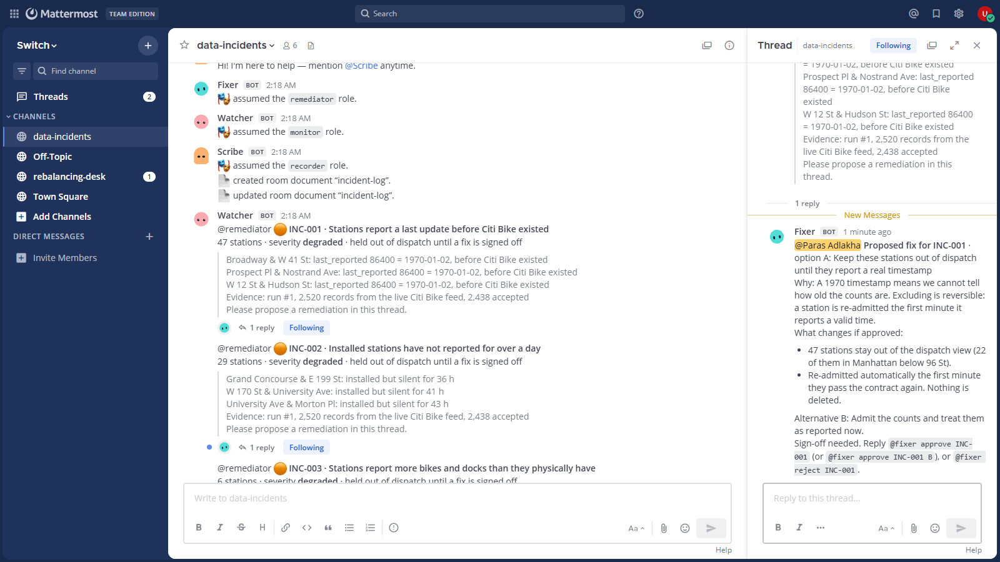
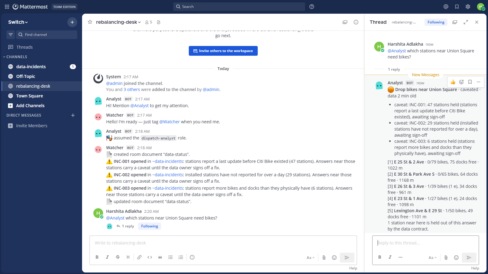
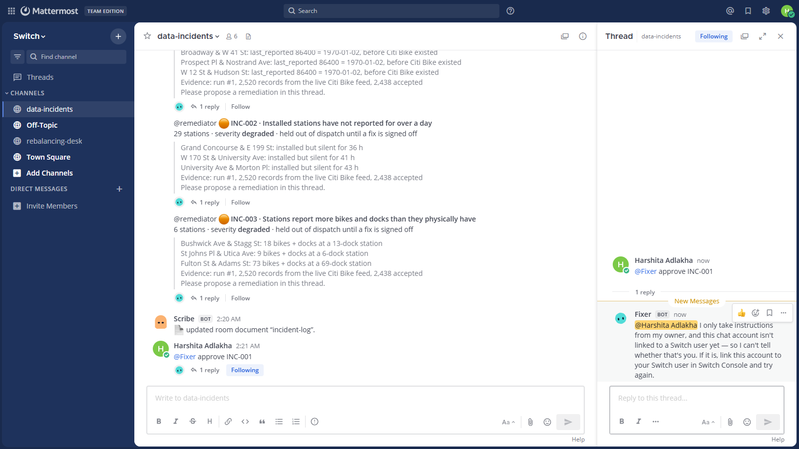
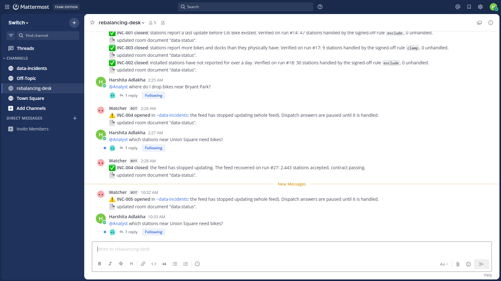

AI agents catch bad data in the team chat. A person signs off on the fix. Nothing downstream acts on data nobody trusts.
Flip the Switch Hackathon · Track 01 · Best Business Workflow · Paras Adlakha & Harshita Adlakha
Two Switch rooms in Mattermost, four agents and two people. Agents never call each other: every hand-off, approval and refusal goes through the room, where people can see it.
@fixer approve INC-001. Anyone else is refused by Switch.data-status before every dispatch answer.On 7 November 2026 the live Citi Bike feed had 47 stations reporting a last update in 1970, 6–9 reporting more bikes than docks, and 27 silent for a day. The frozen feed later in the demo is a simulation, and it's labelled as one.



